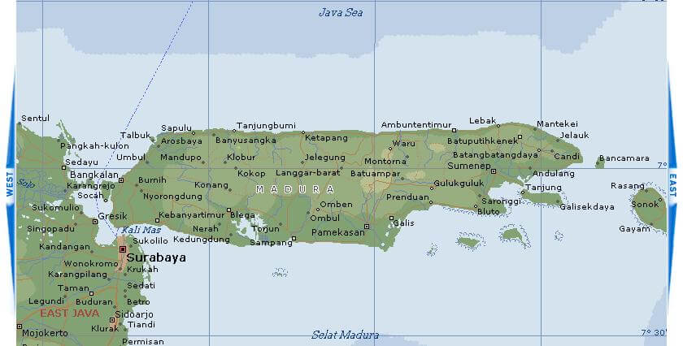

madura

Madura merupakan sebuah pulau yang berada di Provinsi Jawa Timur. Pulau Madura ini terbagi menjadi 4 kabupaten lho, yaitu Kabupaten Bangkalan, Sampang, Pamekasan, dan Sumenep.
Setiap tempat yang ada di bumi ini pasti ada sejarahnya yang kata orang madura “bedeh caretanah kabbi” dan saya akan mengutip sejarah dari empat kabupaten yang ada di pulau madura ini yaitu BANGKALAN, SAMPANG, PAMEKASAN, SUMENEP, bacalah seterusnya di bawah ini :
Bangkalan
Beberapa abad kemudian, diceritakan, bahwa ada suatu negara yang disebut Mendangkamulan dan berkuasalah seorang Raja yang bernama Sangyangtunggal. Waktu itu pulau Madura merupakan pulau yang terpecah belah, Yang tampak ialah Gunung Geger di daerah Bangkalan dan Gunung Pajudan didaerah Sumenep.
Sampang Pada Zaman Majapahit di Sampang ditempatkan seorang Kamituwo yang pangkatnya hanya sebagai patih, jadi boleh dikatakan kepatihan yang berdiri sendiri. Sewaktu Majapahit mulai mundur di Sampang berkuasa Ario Lembu Peteng, Putera Raja Majapahit dengan Puteri Campa.Yang mengganti Kamituwo di Sampang adalah putera yang tertua ialah Ario Menger yang keratonnya tetap di Madekan.
PamekasanKabupaten Pamekasan lahir dari proses sejarah yang cukup panjang. Begitu juga munculnya sejarah pemerintahan di Pamekasan sangat jarang ditemukan bukti-bukti tertulis apalagi prasasti yang menjelaskan tentang kapan dan bagaimana keberadaannya.Diperkirakan, Pamekasan merupakan bagian dari pemerintahan Madura di Sumenep yang telah berdiri sejak pengangkatan Arya Wiraraja pada tanggal 13 Oktober 1268 oleh Kertanegara.
SumenepSumenep merupakan Kabupaten di Jawa Timur yang berada di ujung paling Timur Pulau Madura, bisa dibilang sebagai salah satu kawasan yang terpenting dalam sejarah Madura. Kita dapat menjumpai situs-situs kebudayaan yang sampai hari ini masih menjadi obyek pariwisata.Di Kabupaten itu pula, banyak terpencar pulau-pulau kecil yang kaya akan sumber daya alam dan hasil pertanian. Bahkan, kabupaten ini penuh dengan sejarah raja-raja yang sampai sekarang masih menjadi objek wisata menarik untuk bahan tela’ah dan observasi bagi masyarakat. Yang lebih menarik lagi, di kabupaten ini anda akan temukan sebuah pesantren megah, indah nan modern.
Namanya, Pondok Pesantren Al-Amein Prenduan. Sebagai pesantren kader yang mencetak mundzirul qaum, Pesantren ini menjadi bagian sejarah dari Kabupaten Sumenep. Sebagai bukti, kalau kabupaten ini penuh dengan sejarah, bias kita lihat dari pintu gerbang masjid agung yang ada di tengah-tengah kota.